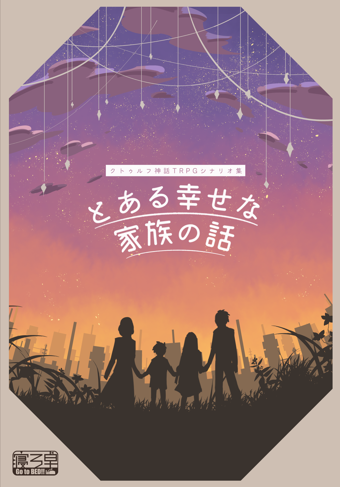
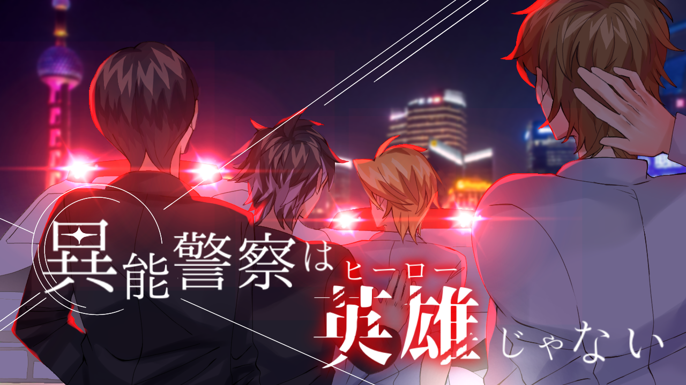

クトゥルフ神話TRPGシナリオ紹介
クトゥルフ神話TRPGとは
『クトゥルフ神話TRPG』とはごく
普通の人々が恐るべきクトゥルフ神話
の脅威に立ち向かう、神秘と恐怖のTRPG
（テーブルトーク・ロールプレイングゲーム）
です。
TRPGとは、パソコンやゲーム機では
なく、進行役を務める人（“クトゥルフ神話T
RPG”ではキーパーと呼びます）がいて、自分
のキャラクターを演じるプレイヤー（“クト
ゥルフ神話TRPG”では探索者と呼びます）と
会話しながら物語を進めていくRPGのこと。
ゲームはキーパーとプレイヤーとの間、
そしてプレイヤーどおりの間で言葉のやり取
りをしながら進んでいきます。
キーパーは
シーンを設定し、状況、登場人物、遭遇する
ものなどをプレイヤーに説明します。それを
聞いたプレイヤーは自分の探索者に何をさせ
たいかをキーパーに伝えます。
キーパーはそ
の行動が可能か、可能でなければ代わりに何
が起こるのかを判断してプレイヤーに説明し
ます。これを繰り返しながらキーパーとプレ
イヤーが協力して物語を創っていくのが“ク
トゥルフ神話TRPG”なのです。
おすすめシナリオ紹介
このページでは私が今まで回ったなかでのお すすめシナリオを10個紹介しようと思います。
1、カタシロ
初心者にお勧めのシナリオです。
本シナリオは「対話シナリオ」と銘打っており
、探索よりはプレイヤーキャラクターとNPCと対
話することがストーリーの軸となっています。
KPとのタイマンシナリオであるためわからないことが
あってもKPにすぐに聞けるし、プレイ時間も2時間と
(TRPGのなかでは割と)短いためプレイしやすいです。
2,沼男は誰だ？
このシナリオは4人で回るシナリオです。
また、時間も8～10時間程度と長くかかります。
シナリオは無料で配布されており、製作者様が「
KPの負担が減るように」との
工夫がされているのでどちらかといえばKP側への
おすすめになるかもしれません。
３，とある幸せな家族の話
このシナリオからは秘匿シナリオになります。
秘匿シナリオとは、PLごとに事前にそれぞれ探索
者の設定や自分しか得られていない情報、秘匿
情報がKPから配布され、お互いがどのような秘匿
情報を持っているのか分からない状態でセッシ
ョンを始めるシナリオ のことです。
その配布された秘匿情報には、程度に差こそあれ
ど探索者を作成するヒントが書かれています。
秘匿のないシナリオと比べると難易度が高
いのでTRPGにある程度なれてきてから回るのが
おすすめです。

このシナリオは４人家 族で回るシナリオです。家族の愛に触れるシナリオです。私は今まで回 ったシナリオの中でこのシナリオが一番泣きました。
困難を乗り越えい！心を揺さぶられるシ ナリオをプレイしたい！という方にお勧めです。 とある幸せな家族の話
４，dropout despair（ドロップアウト ディスパイア）

このシナリオはいくつもシナリオを回った上級
者向けのシナリオになります。
探索者は4人、全員が
中学校教師です。
いじめなどの表現が入っ
ているため、事前の地雷チェックが必須となります。
終始感情をぐちゃぐちゃにしに来るシナ
リオで、その分回り終えた後の達成感も余韻もすさまじい
です。
５，異能警察は英雄じゃない

このシナリオは超長時間シナリオになります。概
要には16～18時間とありますが、私が回った時
は24時間かかりました。
探索者は4人、全員が警察官です。長時間
のため全員の日程を合わせるのが難しいかも
しれませんが、
その分探索者への愛着も自陣への思いも強く
残るシナリオです。
あとがき
これら以外にもたくさんのシナリオがあります。一人で回るものから大人数で回るものまで様々です。 キャラクターをつくり、別人になり切ってシナリオを進めていくと、自分の変わった一面なども 知れてとても面白いです。気になったものがあればぜひ遊んでみてください！
注意
このページで利用している画像は、製作者様方が販売しているシナリオ内に入っているものです。